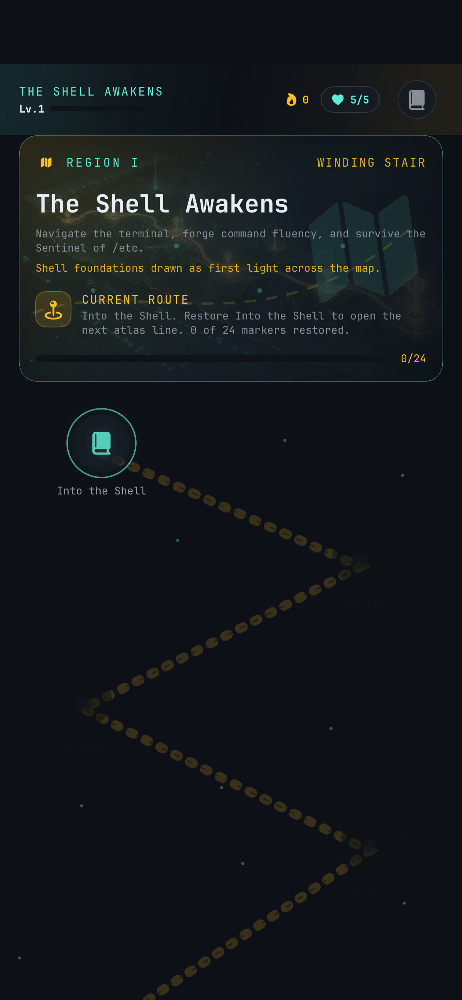
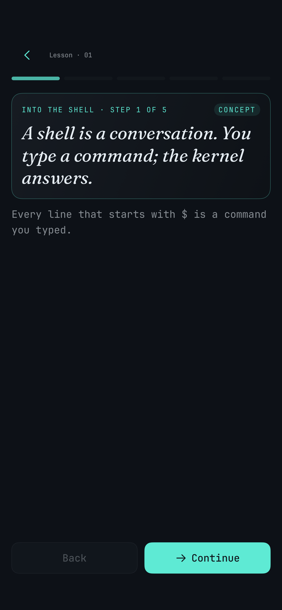
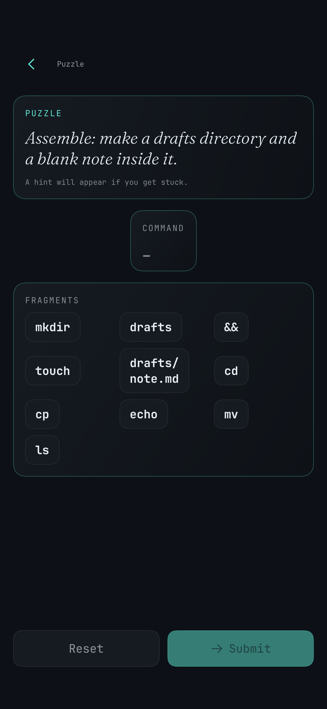

Pick up the next command marker on a campaign map built around Linux basics.
$ shell-atlas start
Learn the shell, one star at a time.
Shell Atlas is an iOS learning app for Linux command-line basics. Follow a campaign map, practice real command patterns, and build lasting recall in a safe simulated terminal.
This GitHub repository is a public promo page only. The app source code, build files, private configs, internal docs, and release workflows are not published here.
How it works
Short sessions move from map to lesson to practice, then back into review to strengthen recall.
Learn concepts, answer quick checks, and assemble command fragments without risking a real machine.
Completed commands return in spaced review so the basics stick.
Product screenshots
Three public-safe app screenshots from the current Shell Atlas UI.



Product facts
Key details about the app. Source code and internal materials are not published here.
iPhone first, with iPad and Mac Catalyst planned.
Education and reference for terminal fluency.
Campaign, lessons, puzzles, and review.
Public pointer only. No source code lives in this repo.
Go to the official Shell Atlas site.
Find launch details, updates, and more on the product site.